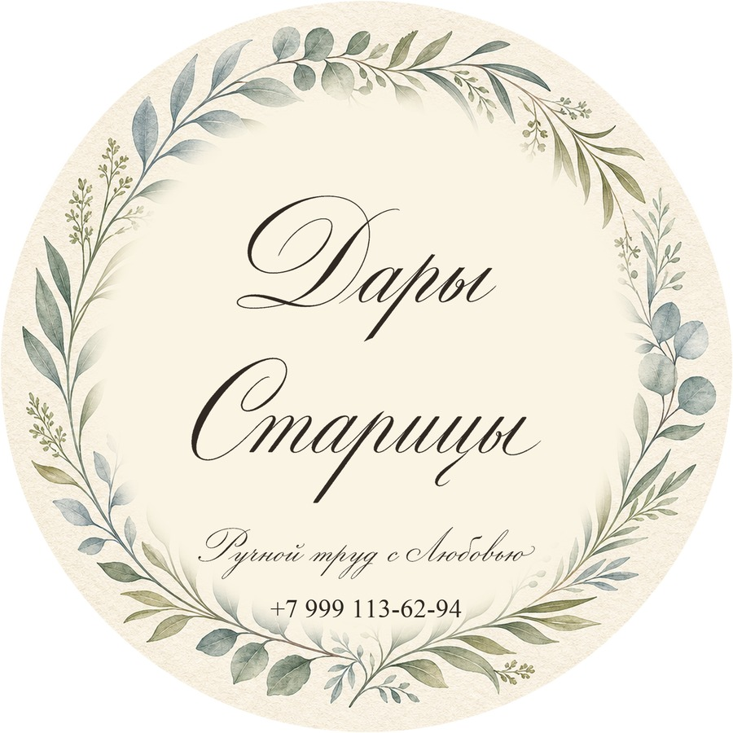
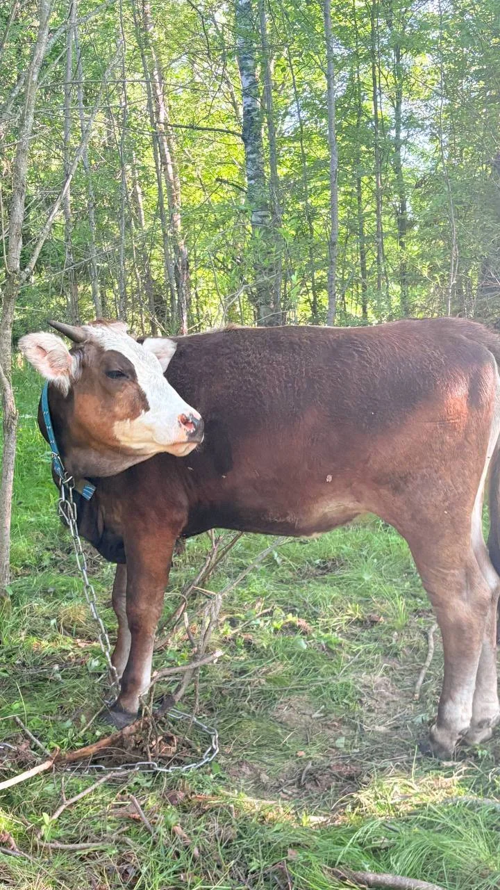
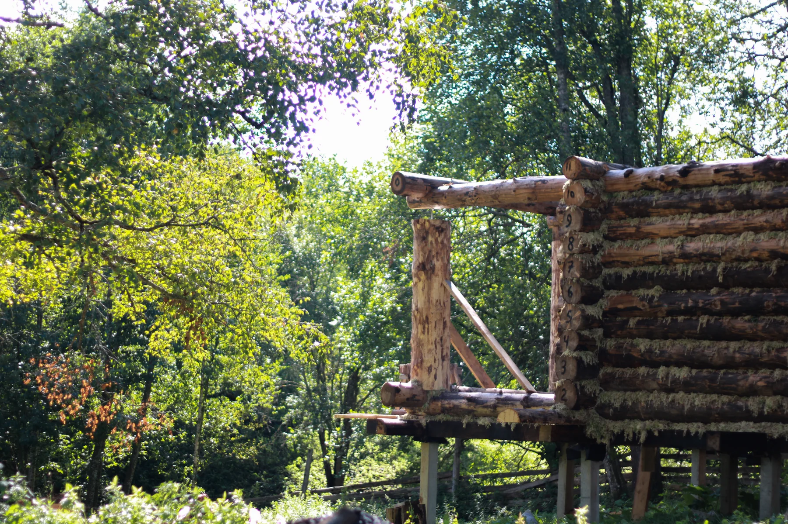
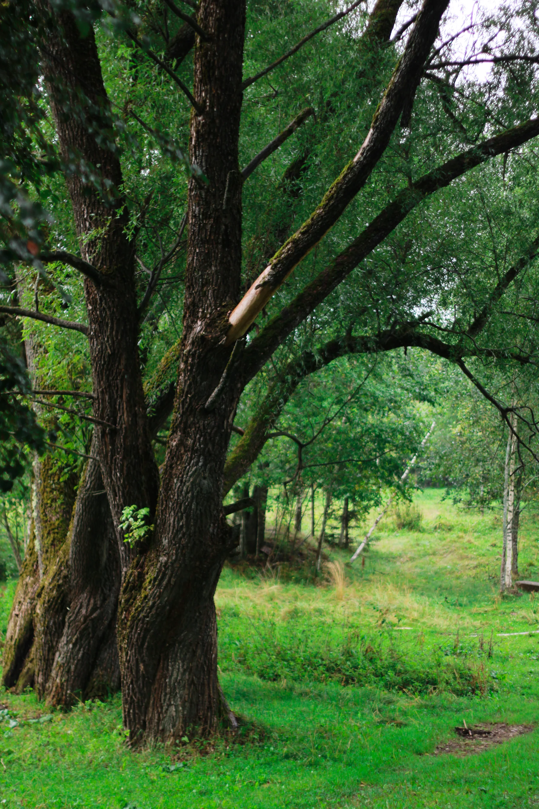

Семьи с детьми
Живые коровы и овцы, понятный сценарий на день, еда с собой - без парка-аттракциона.

Живая мини-ферма в Климово у Старицы: подоить корову, покормить животных, погреться у печи и увезти домой настоящее молоко.
Кому это
Главный оффер - семейный день на настоящей ферме. Рядом - ночёвка и продукты без визита.
Живые коровы и овцы, понятный сценарий на день, еда с собой - без парка-аттракциона.
Гостевой дом, баня с чаном, травяной чай и тишина без сотовой связи.
Молоко, творог, сметана, сыр и мёд - с фермы и с ярмарок.

Агротуризм
Зависит от сезона и погоды. Собираем программу под вас: с детьми, вдвоём или «поработать руками».
Один день руками: прибить доску, убрать навоз, накормить животных, наколоть дров, растопить печь, посадить дерево или собрать урожай. Понять, надо ли оно вам - на деле, не на картинках.
Проживание
Гостевой домик со всеми удобствами - или старая изба с русской печью, если хочется почувствовать деревню целиком.

Две комнаты и кухня-гостиная. Баня с вениками, чан с родниковой водой, самовар и травяной чай. Для тех, кто хочет комфорт рядом с фермой.

Не все удобства города - зато русская печь, которую нужно топить, и ощущение жизни предков. Можно совместить с днём на ферме и корзиной продуктов.
Дары Старицы
Ручной труд с любовью. Можно забрать после визита или заказать отдельно - в том числе на ярмарках.

Коровье и козье - свежее с фермы

Как дома, без лишней химии

Сварим и покажем процесс

Сливочное и топлёное
Выставляемся с крафтовой продукцией, растём до родных и других площадок. Если ищете нас на ярмарке или хотите заказ к событию - напишите в канал.
Фотоархив
Свежая съёмка фермы, лугов и двора. Больше кадров - в Telegram.
Обнять берёзу, поваляться на сене, посмотреть звёзды - это тоже Климово.
Больше фото в @KlimovoZЛогистика
Деревня Климово, сельское поселение Станция Старица, Старицкий муниципальный округ, Тверская область.
Сотовой связи почти нет. Wi‑Fi - только для экстренных случаев. Берите это как часть отдыха.
Напишите даты и состав семьи - соберём день на ферме, ночёвку или корзину продуктов. Без суеты и лишних обещаний.
{kind=link}
{kind=link}
{kind=link}
{kind=link}
{kind=link}
{kind=link}
{kind=link}
{kind=link}
{kind=link}
{kind=link}
{kind=link}